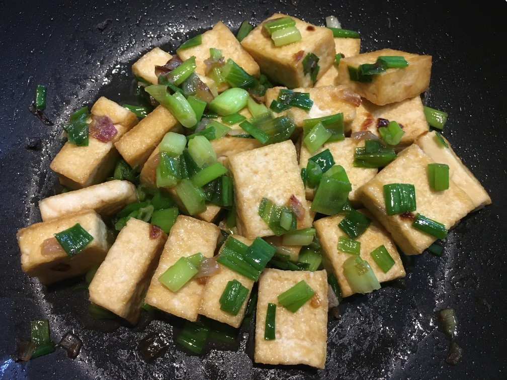

| Other | Meat | Veggie | Fruit |
|---|---|---|---|
| nuoc mam | tofu | green onions | |
| shallot |
| instructions |
|---|
| Cut shallots and green onions |
| Make a 1:1 mixture of water and nuoc mam in a small bowl |
| Fry tofu |
| Stir fry the shallots until golden |
| Add green onions and stir until they soften |
| Add tofu and sauce mixture |
| Stir and adjust to taste, remove from heat after a few minutes |